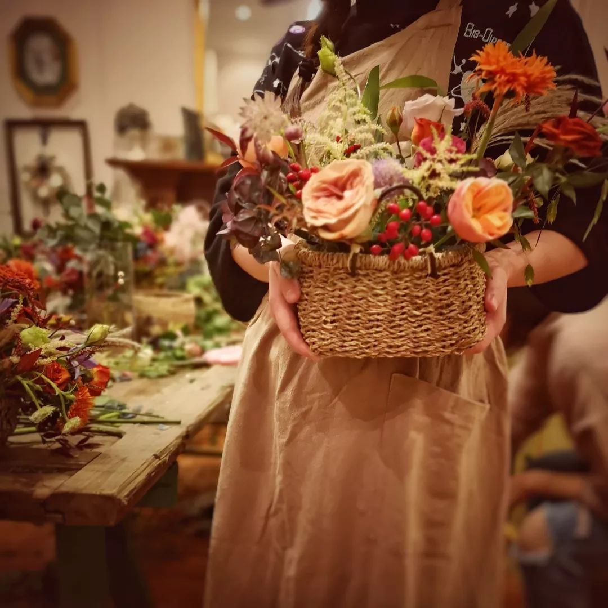
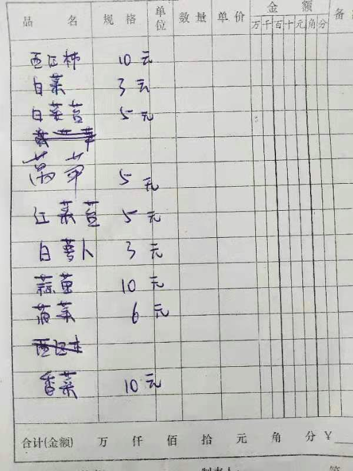
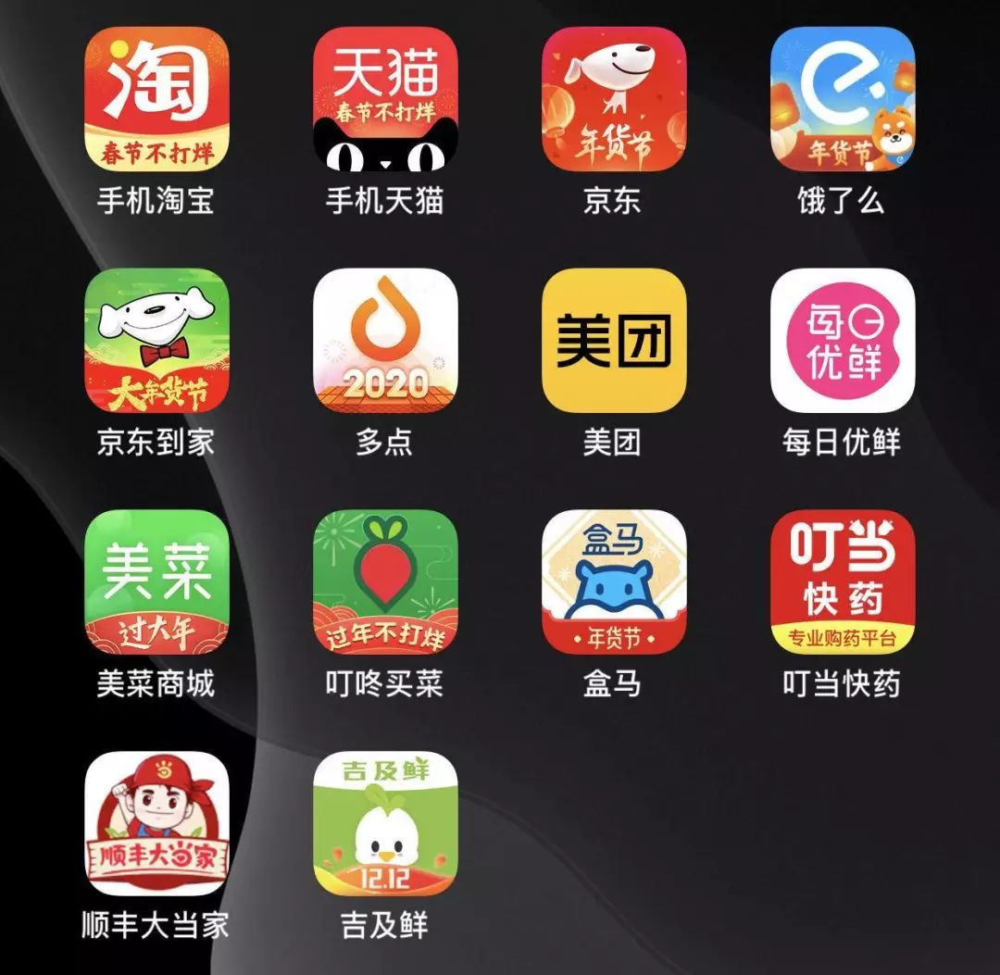
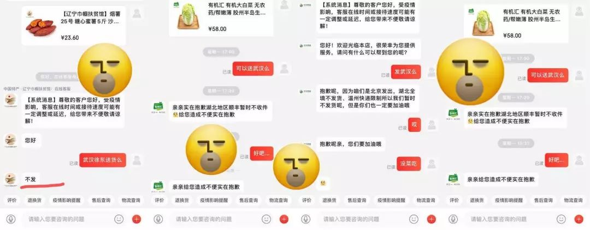
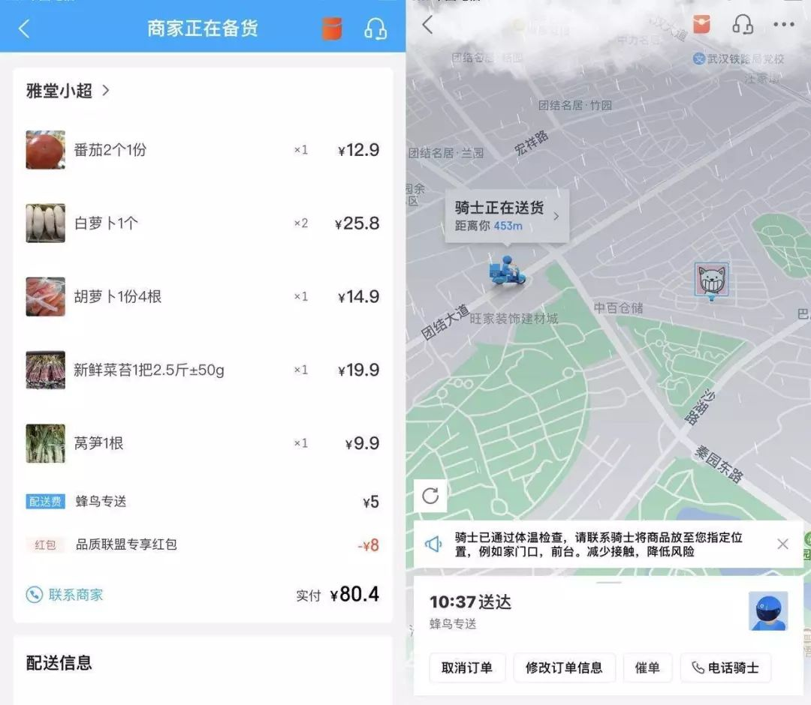
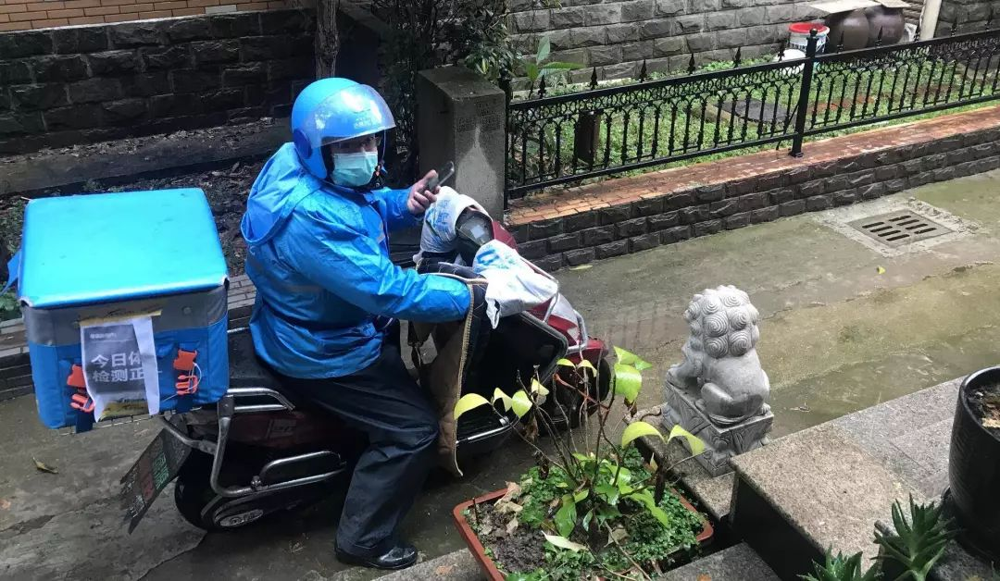

池莉：隔离时期的爱与情
原文链接 备份链接 隔离就是战争！战争必须让愚蠢无知廉价的爱与情走开！ 2020年1月22号夜，武汉三镇，这夜注定无人入睡，或者，很难入睡。 这是一个非常的夜晚，在将近23点的时候，单位突然来电话，紧急通知：从明天起，武汉市民实施隔离。也 …


封城第17天，有好几位武汉日常的每日书作者们不约而同写到了买菜这件事。有人发现某电商平台的蔬菜起送价格突然被调高到了2000元，有人发现原先因为运力不足而延期开售的平台至今没有恢复，有人发现一筐鸡蛋已经卖到了 70 元以上……除了在网络电商平台上抢菜之外，最近还出现了林林总总的“买菜群”，群里有卖菜人公布报价单，有“接龙”买菜的新形式。他们记录下了这些日常的片段，焦虑、不安、充满不确定。我们总说，生活还要继续。但如果连生活能不能继续都成了问题呢？

作者：影青
坐标：上海
职业：客户运营、花艺师、导游
家里小区从开始有1例确诊之后11号楼整个就封闭了，所有11号楼的人都需要隔离由网格员帮助他们进行生活物品的采购。其他的楼栋只能按单双号限制出小区。
我妈说前几天还在出门遛弯的人现在很难在见到，还好小区隔壁的菜市场还开着，但是因为担心父母出门的风险，还是选择了在各个社区微信群里去买菜，供少于求让菜每天一个价格，之前最便宜的大白菜报价3元/斤，大部分蔬菜价格都在5元/斤左右。这个是一个卖菜人的报价单。

翻出来多年没有联系的老同学，问他们哪里有线上买菜的渠道，答案都是只能自己出门在小区附近去买菜。
所有饿了么、美团、京东上都没卖菜的页面。小城市里每个小区不足1公里基本上都会有一个菜市场或者小型菜摊，而买菜的主力军都是50岁以上的阿姨，她们平时早上会享受到菜市场讨价还价的市井气息，很少听说她们会在网上买菜。在三四线城市，买蔬菜瓜果这种新鲜的食材往常都跟线上没什么关系。几经周折终于找到一家超市有网上的下单页面，蹲点下午14：00开始给我爸妈买了一个50元的套餐，也顾不上套餐里有什么蔬菜，至少有好过于没有。
微信订购群里时不时有人来咨询要怎么下单，卖菜的老板说下午4点多可以开始订购，今天的鸡蛋备的比较多，群里按捺不住的人也不管其他的东西有没有货都着急开始发自己需要的食材了。
那些不在配送范围的人，大概是比较失望的，好不容易找到一个配送的群但是因为距离太远不送货了。他们还得继续寻找看有没有愿意配送的其他群，毕竟现在出门的风险实在是太大了。
丁香医生上的确诊人数的已经过2万了，武汉还有无数的人在发各种求救的信息，所以当初选择封城的时间应该也是无奈之举，毕竟只凭武汉一个城市肯定无法吸纳好几万的病人，能逃出来的人或许还有一丝生机，目前武汉之外的感染人数暂时还是一个可控的范围，毕竟在医疗系统没有挤奔溃的情况下，这个病的治愈度还是比较高的。
实在想不到，有生之年会遇到这种意外的变故。真希望这只是一场梦，醒来了才是真实的世界。
_

作者：安格
坐标：湖北武汉
职业：自由职业者
好友k发来小姨确诊的消息，双肺已经感染成网状，核酸结果后天才能出来，出来后才可以走后面的住院流程。现在只能先吃药。
而他所在公司，已经在线远程办公好几天，今天HR发来消息，希望他们“主动放弃本月工资。”
“不拿工资可以，那也不用做事了。”k说，对方没有回复。
不一会儿，他又接到主管安排的任务。
好友小蝶发来消息说，很难过，躺着躺着就开始流眼泪。
我们都看到了李文亮去世的消息，甚至还有些“他生前被施压”的传闻。这些疯传的消息像野草一样扎根进每个人心里，但久久没有回应，也会像野草一样被一场火烧尽。
从小被教育着，要做一个诚实的人。大人们从未告诉我们，说真话要付出这么惨重的代价。
外地的朋友发来消息问候，也只能回复说“还好呢，谢谢关心。”
大事管不来，只能每天操心点柴米油盐的小事。之前买菜的平台突然把起送调高到了2000元，后续的菜没办法买，于是又疯了一样地清扫各个平台。
所有之前试过的渠道说不送就不送了，每日生鲜说5号恢复运力却也延迟，开通遥遥无期。
住在没有多少人入住的新房子，还没有物业无法团购菜，盒马也无法配送，就连天猫上都无法下单，感觉很容易就弹尽粮绝。
“不然就买便利店里的食物好了！要去买就一次性多买点！”外地的朋友这样建议我。
我不好说我已经半个月没怎么出门，出门的次数一张手数的过来，每次也不超过10分钟，一般就是去拿外卖。
而饿了么和美团上，我们周围也鲜有便利店还开着，更没有新鲜便当上架。
先这样撑着吧。
闺蜜在群里发酒精和消毒纸巾的购买链接，想也不想地又跟着买了些。
本以为会越来越好的，但现在看来，似乎越来越严重了。
_
作者：小满
坐标：武汉徐东
职业：新媒体
说出来连我在上海的朋友都不信，从封城的第一天凌晨，我每天都在为买菜而发愁，虽然头几天我爸冒着风险去超市采购了一波，可是一家三口一天三餐，眼见着菜筐里的菜越来越少。仅剩的几个鸡蛋也因为一直省着没吃，结果放太久空了许多。
晚上和我姐语音聊天，说说这几日的情况，她也完全无法想到，“啊，不是有很多物资送去你们那边了么？你们买不到菜？”
而且，问我爸需要什么菜的时候，他来了句，“急需鸡蛋，肉肉”。
其实，不是买不到菜，从线下来看，中百仓储、武商量贩和一些大型商超是营业的，去得早是买的到的，之前我爸早上十点去采购的那次，看到货源还比较充足，主要是没有大白菜和萝卜。主要原因之一是，管制越来越严，很多社区陆续公布了疫情公示，其中有列出确诊和疑似的数据，特别是看到一些恶意报复社会的视频，还有听闻说有超市的称菜员被感染后，现在大家都不敢出门了，当然我们社区有一些“胆子很大”的阿姨还是每天去买菜的（截止今天，我没有收到任何社区通知和信息，原因稍后道来）。

从买菜群里看到的邻近社区通知
不敢出门，大家都在线上各种途径搜索。说到线上购菜，封城之前，我很少从线上平台买菜，连外卖软件都没有下载过，可是这几天情势所迫，疯狂下载各大平台APP，熟悉界面后各种点击尝试，然而……结果很失望，因为新鲜蔬菜很难买到。

详情可查看看下方截图

搜蔬菜结果搜出来的不是海鲜就是花花草草，门店全部休息中……

再要不就是交通管制，地址不在配送范围，或者直接不发湖北……

不过今天早上可能是运气爆棚，抱着试试的心态点开了饿了么，跟随一筐70+元的鸡蛋我点进了一个不知名的小超市的页面，事后我都无法相信，我是怎么买到了这些菜，竟然还真有骑手接单，骑手还在运送中，一切简直太不可思议了。
不过，菜是真的好贵，鸡蛋我也没买……


感谢骑手小哥
此外，也就是这几天，大家在群里都在各种询问，“你们怎么买菜啊？”“在哪里买肉啊？”
我也是头一次知道有“买菜群”这个神奇的组织。而且第一次进群简直太感动了！各个小区的业主们都在“接龙”买菜，是我手机目前有的微信群里最热闹的，消息一条接一条的弹出来，还有刚进来的人一开口就问，“龙在哪里？”


不过，由于我们这个小区需求不太多，我订两份的话，送菜的老板很难排单，一般都是紧着量大的社区送，最低也得20份起送，我还尝试从微邻里里面询问有没有我家附近的住户可以一起凑单，于是创建了一个我们小区的买菜群，结果，人数寥寥无几，最多只能凑3份。恨不得打开窗子吼一嗓子“要买菜的加我微信！”
自建的群人员不多，有几个是通过微邻里加过来的，不过总算认识了几个邻居，一打听结果还是住对面的两户，其中一户斜对门的大爷家里有一只小狗，不过也是通过建群我才知道他姓张，之前只听他喊自己家里的狗的名字“yongyong”（二声，不知道是啥字）。
我们小区大多是爹爹婆婆，很多都在自家院子种的有菜，年龄大一些的阿姨也都是自己出去买菜，所以没有什么人凑单。
像张大爷屋里就种了很多菜，还有上海青和藕，他还说你们想吃菜过来摘。得知我住在他斜后面之后，提醒我说社区有人说我隔壁有人病了，我很惊讶，然后大爷还把我拉进了社区群，原来社区是有群的！而且社区晚上发消息说有需要蔬菜的可以联系我们小区门口的小超市，那里有物资。终于可以暂时不用愁青菜了……
不得不感叹一句，你大爷终究是你大爷，这句话真对！
虽然自建的小区群人不多，可是拉近了邻里之间的关系，这是之前完全没想到的，而且还转了一部分人加入社区群，帮助他们也找到了组织（他们还把我当成了社区工作人员）。不禁要好好反思一下，之前自己太不重视邻里之间的关系了，见人打招呼都会感觉害羞，最后连邻居姓什么都不清楚。嗯嗯，算是从疫情中得到的教训之一。


原文链接 备份链接 隔离就是战争！战争必须让愚蠢无知廉价的爱与情走开！ 2020年1月22号夜，武汉三镇，这夜注定无人入睡，或者，很难入睡。 这是一个非常的夜晚，在将近23点的时候，单位突然来电话，紧急通知：从明天起，武汉市民实施隔离。也 …
原文链接 备份链接 大年三十那晚，有人向我提问：“我们应该开开心心过年吗？”在家人围坐观看春晚的时候，她一直在为武汉疫情焦虑，关注各类讯息，反被家里人批评扫兴。 人类的悲伤和喜悦虽不共通，但是可以同时存在。每一种情绪都是真实的。恐慌、焦 …
原文链接 备份链接 唯一的方式就是隔离，继续隔离，将隔离进行到底。 口述 | 池 莉 **整理 | 何映宇** 今天只有一个强烈的呼吁——已经呼吁多天了，要采取切实隔离措施与行动到社区！人们为了买食品蔬菜还在超市拥挤，极容易造成再次感染传 …
原文链接 备份链接 前言 2003年的非典，我在武汉读书，每天两点一线地简单生活，虽然也看看新闻报道，但那时的网络并不发达，信息量很少，武汉感染的人也很少，所以真的没有什么感觉。 2020年的肺炎疫情，爆发在我生活了将近20年的武汉——这 …
原文链接 备份链接 今天是武汉封城第13天，在城内留守的900万市民，除了为核酸检测、为床位奔波的人们，还有大多数人留在家中，除了采购生活物品和倒垃圾，连家门都不出。他们怎么度过封城的日子？本文作者的经历或许能代表一些普通武汉家庭的日常。 …